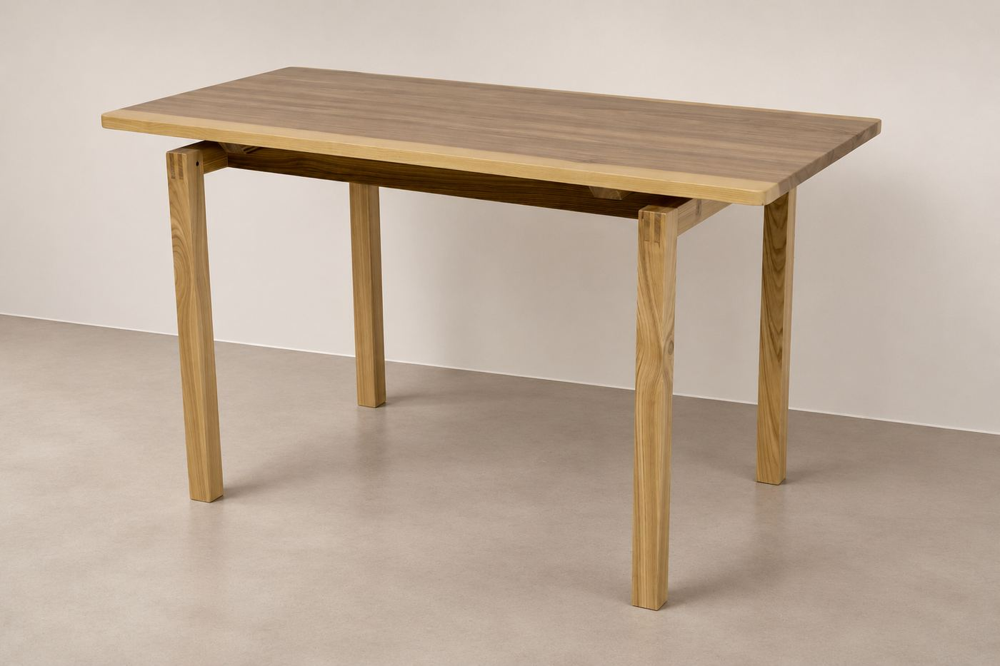
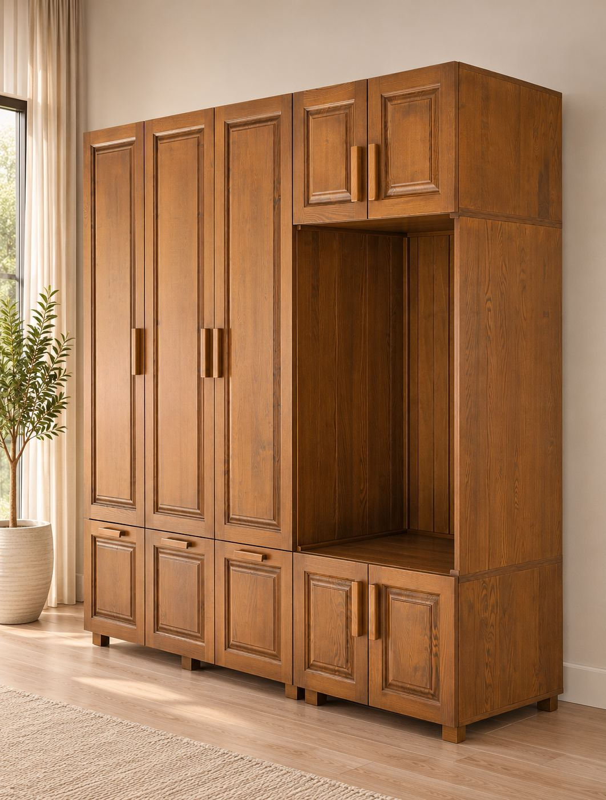
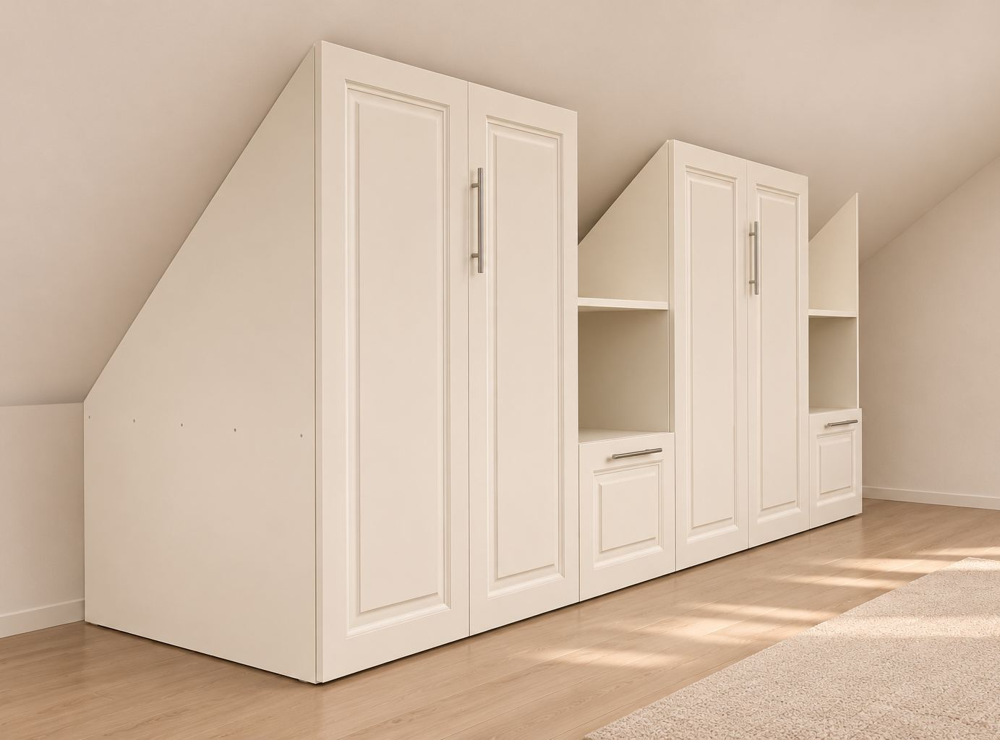

Portofoliu
Lucrări BALU.
Scări, uși, mese, mobilier și piese CNC, realizate în atelierul din Gorj și montate în România, Germania și în restul Uniunii Europene.
 Scară din lemn natur cu balustradă din lamele
Scară din lemn natur cu balustradă din lamele Scară antracit cu balustradă din lamele
Scară antracit cu balustradă din lamele Uși din lemn natur, cu geam decorativ
Uși din lemn natur, cu geam decorativ Uși de interior antracit, cu panouri frezate
Uși de interior antracit, cu panouri frezate Masă rotundă cu picior central
Masă rotundă cu picior central Birou cu sertare suspendate
Birou cu sertare suspendate
Masă din lemn masiv cu îmbinări aparente
Mobilier de hol cu bancă integrată
Mobilier integrat pentru mansardăAici: primul proiect CNC, cu fotografii[Proiect CNC]
Un proiect asemănător?
Cererea de ofertă durează două minute: tipul piesei, câteva detalii și, opțional, fotografii ale spațiului.